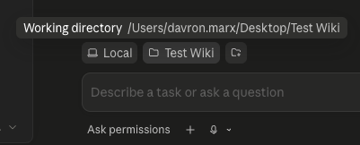

A friendly walkthrough for setting up an AI-powered knowledge base with Claude Code — and collaborating on it with your team. No terminal. No coding.
In about ten minutes you'll have an AI-powered wiki running on your computer — even if you've never installed a developer tool before.
If you don't already have it, download the Claude Code desktop app from claude.com/claude-code. It's free, installs in under a minute, and works on Mac and Windows.
Sign in once you've launched it — that's the only account you need for this whole section.
Pick a spot on your computer — your Desktop is fine. Create a new folder and name it whatever you want: My Wiki, Gardening Notes, Work Knowledge Base.
That folder is the home of your wiki. Everything will live inside it.
Launch the Claude Code desktop app and open the folder you just created. You should now see an empty project with a chat box ready to go.

Paste this prompt into Claude Code:
.claude/skills/wiki-generator/ so the skill only applies to this project. Once it's installed, list the skills so I can confirm it's ready to use.Don't worry about the technical words inside — just paste the whole block as-is. Claude handles the rest.
If Claude asks for permission, just Always Allow. You only need to do this once per wiki.
In Claude Code, type:
/wiki-generatorClaude will create three folders for you:
raw/ — where you drop source files (articles, notes, research)wiki/ — where the polished knowledge base livesoutput/ — where reports and query results show upIt also installs two companion skills — /raw-compile and /audit-wiki — automatically.
raw/This is where you feed your wiki. Open the raw/ folder and drop in any files you want included — articles, notes, research clippings, transcripts.
Add as many files as you want. Don't worry about organizing them — that's Claude's job.
In Claude Code, simply say:
compileClaude will read every file in raw/, group the files by topic, write clean wiki articles into wiki/, link them together with [[wiki links]], and archive the compiled raw files so you know what's been processed.
Sit back — this part is automatic.
Once your wiki is built, check it for gaps or inconsistencies. In Claude Code, say:
auditClaude will scan the wiki and produce a numbered audit report in output/_audits/. The report points out missing cross-links, thin topics, and inconsistencies between articles.
The audit is report-only by default — it won't change anything until you say so.
raw/ whenever you have it, run compile to pull it in, and audit when you want a sanity check on what you've built.
| Action | What to say |
|---|---|
| Set up a new wiki | /wiki-generator |
| Compile new files | compile |
| Audit the wiki | audit |
| Ask a question | Just ask in plain English |
Claude builds the wiki. Obsidian — a free markdown app — gives you a clickable, searchable, visual way to read it. Same folder. No sync needed.
Claude Code is great for building the wiki — compiling raw files, writing articles, running audits. But it's not designed for browsing what you've built.
Obsidian fills that gap. It's a free markdown reader that natively understands [[wiki links]] — the same link style Claude already writes into every article. That means:
[[link]] in an article and jump to it.Obsidian doesn't change your files. It just reads the same folder Claude is writing to.
Obsidian is free for personal use — no account or sign-up required.
In Obsidian, a "vault" is just a folder full of markdown files. Your wiki folder is already exactly that.
Obsidian scans the folder and shows every markdown file in the left sidebar.
CLAUDE.md, raw/, etc.), or just the wiki/ subfolder if you only want to browse the polished knowledge base. Either works — pick whichever feels less cluttered.Your wiki has a built-in entry point.
wiki/_master-index.md.[[link]] in the table to jump to that topic's index.This is the same path Claude follows when answering questions — now you can walk it yourself.
This is the fun part.
Every article is a node. Every [[link]] between articles becomes an edge. Drag any dot to pull the graph around.
The graph is a quick way to spot orphaned articles (nothing links to them) and clusters (topics that are tightly connected). It's also a nice visual gut-check on how your wiki is growing.
Press Ctrl/Cmd + Shift + F to open the search panel. Type anything — Obsidian searches across every article instantly.
For quick file-name lookups, press Ctrl/Cmd + O and start typing an article name.
You don't have to pick one. They share the same folder.
| Task | Use |
|---|---|
Drop new files into raw/ | Either (Obsidian or Finder) |
| Compile / audit / ask the wiki questions | Claude Code |
| Browse, search, follow links, read articles | Obsidian |
| Edit an article by hand | Either |
A common rhythm:
compile to bring new files into the wiki.audit.Want a small team to build the same wiki together? Use GitHub Desktop as the syncing layer. No terminal, no coding.
team-wiki). Keep it Private if your files are sensitive.You now have a synced copy of the wiki on your machine.
The daily rhythm. In GitHub Desktop's own words this is the Pull → Work → Push loop — same idea, more technical-sounding.
Sync — before you start:
Work — as usual:
raw/, say compile, ask the wiki questions.Share — when you've made changes you want others to see:
Your team members can now Fetch → Pull to receive your changes.
The "everyone pushes to main" flow above works for small, trusted teams. As your group grows — or when changes need a second pair of eyes before going live — switch to Pull Requests.
Think of a Pull Request (PR) as a draft change proposal. Instead of pushing your edits straight into the shared wiki, you save them on a personal "side track" (a branch) and ask a teammate to review them. Once approved, the change is merged into the main wiki — and everyone else pulls it down as normal.
It's the digital equivalent of "let me show you this before I publish it."
PRs introduce a split between two roles:
| Role | Who | What they do |
|---|---|---|
| Maintainer | Team lead (1–2 people) | Reviews PRs, approves or requests changes, merges into main, manages access |
| Contributor | Everyone else | Edits the wiki on their own branch, opens a PR, responds to review feedback |
The maintainer is not the only one who can edit the wiki — contributors do all the writing. The maintainer's job is to be the gatekeeper of main, making sure nothing inconsistent or accidental lands in the shared copy.
To require PRs (instead of letting anyone push directly to main):
mainFrom now on, every change — even the maintainer's own — flows through a PR.
1. Start a branch before editing. In GitHub Desktop, click the Current Branch dropdown → New Branch → name it after your change (e.g. add-gardening-notes) → Create branch.
2. Edit as usual. Open the folder in Claude Code, drop files into raw/, say compile. Your changes are isolated to your branch — main is untouched.
3. Commit and push your branch. Write a commit message → Commit to <your-branch> → Publish branch (first time) or Push origin (after that).
4. Open the Pull Request. GitHub Desktop shows a Create Pull Request banner — click it. A browser tab opens on github.com. Add a short description of what changed and why → Create pull request.
5. Wait for review. Your maintainer gets notified. They'll either:
main and become painful to merge.